화약류관리기사 (2005-03-06 기출문제)
1과목: 일반화약학
1. 낙추감도 곡선에서 50% 의 폭발률점이 의미하는 것은?
- 불폭점
- 완폭점
- 임계폭점
- 등전점
(정답률: 알수없음)

2. 다음 화약류의 특유기와 관계가 잘못 짝지어진 것은?
- 질산에스테르 - 니트로글리세린
- 니트로화합물 - 티엔티
- 아민질산염 - 테트릴
- 니트라민 - 헥소겐
(정답률: 알수없음)
3. 수중(水中)발파에 사용되는 폭약으로서 내수성이 가장 우수한 폭약은?
- 초유(硝油)폭약
- 암모니아 다이너마이트
- 슬러리(slurry)폭약
- 초안폭약
(정답률: 알수없음)
4. 질산암모늄유제폭약(AN-FO) 제조에 사용하는 연료유(경유)의 인화점은?
- 섭씨 20도 이상
- 섭씨 30도 이상
- 섭씨 40도 이상
- 섭씨 50도 이상
(정답률: 85%)
5. 다음 중 순폭시험에 대한 설명으로 옳은 것은?
- 약포 지름의 배수로 표시 한다.
- 순폭 거리를 ㎝로 표시 한다.
- 순폭 거리에서 불폭 거리를 뺀 값으로 정한다.
- 순폭 거리와 불폭 거리와의 평균값으로 정한다.
(정답률: 71%)
6. 등황색 또는 적갈색의 사방정형 결정으로 발화점이 약 280℃ 이며, 물이나 유기용제에 녹지않고, 정전기에 매우 예민한 기폭약은?
- 아지화납(Lead Azide)
- 테트라센(Tetracene)
- 트리시네이트(Llead trinitroresorcinate)
- 디아조디니트로페놀(DDNP)
(정답률: 알수없음)
7. 질산 Ammonium 유제 폭약에 대한 설명으로 옳은 것은?
- 충격에 대해서 둔감하기 때문에 화기에 주의할 필요가 없다.
- NH4NO3 와 유제를 주성분으로하고 다른 예감제로 되는 금속분을 함유한다.
- 후 gas가 좋으므로 갱내에서 사용해도 좋다.
- 둔감하기 때문에 이것을 기폭시킬려면 Booster를 사용하여야 한다.
(정답률: 알수없음)
8. 질화납(Lead Azide)의 성질 및 용도가 아닌 것은?
- 충격, 마찰, 연소로 점화하면 폭굉한다.
- 기폭약, 점폭약의 원료로 쓰인다.
- 뇌홍보다 폭속이 느리다.
- 발화점은 340 ~ 360℃ 정도이다.
(정답률: 알수없음)
9. 다음 중 질산염을 주로하는 폭약은?
- 뇌홍
- Nitroglycol
- 흑색화약
- Nitro cellulose
(정답률: 알수없음)
10. 제조 후 1년 이상 경과한 것으로 연1회 유리산시험 또는 내열시험을 해야 하는 화약은?
- 질산암모늄 폭약
- 흑색화약
- 교질다이너마이트
- 카알릿
(정답률: 알수없음)
11. Free acid test 에 있어서 시료는 시험관 높이의 어느 정도가 되도록 넣는가?
- 1/2
- 1/3
- 3/4
- 3/5
(정답률: 알수없음)
12. 도폭선에 대한 설명으로 옳지 않은 것은?
- 제1종 도폭선은 폭속이 5500m/sec 로 T 도폭선 이라 한다.
- 제1종 도폭선의 심약은 T.N.T 와 피크린산을 사용한다.
- 제2종 도폭선은 심약을 펜트리트나 핵소겐을 사용한다.
- 제2종 도폭선은 금속관체에 심약을 용진(熔眞)한 것이다.
(정답률: 알수없음)
13. 폭약의 배합에 있어서 산소과부족량을 부(-)로 하면 폭발 후 무슨 유독 기체가 발생하여 적합치 않은가?
- 이산화탄소(CO2)
- 일산화탄소(CO)
- 수소(H2)
- 산소(O2)
(정답률: 알수없음)
14. PETN(pentrit)은 충격에는 예민하고, 마찰에는 둔감한데 운반시 어느 정도의 수분을 함유해야 하는가?
- 2 ~ 5%
- 6 ~ 10%
- 15 ~ 20%
- 25 ~ 30%
(정답률: 알수없음)
15. TNT의 성질에 대한 설명으로 옳지 않은 것은?
- TNT는 흡수성이 매우 크므로 물에 잘 녹는다.
- TNT는 Picric acid 에 비하여 폭력이 적다.
- TNT는 Picric acid 보다 충격감도는 둔감하다.
- TNT는 Picric acid 와 같이 금속과 접촉하여도 금속염류를 만들지 않는다.
(정답률: 80%)
16. 저항 1.4Ω 의 전기뇌관 10발을 제발시키려면 몇 V 의 전압이 필요한가? (단, 발파모선은 BS 18번 : (단선1m의 저항 0.021Ω)의 총 연장 100m 며 발파기의 내부저항은 없고 뇌관 1개당의 소요전류는 2A 이다.)
- 41.5V
- 32.2V
- 31.5V
- 39.0V
(정답률: 알수없음)
17. 강면약 생성시의 조건을 설명한 것으로 옳지 않은 것은?
- 니트로화의 온도가 높다.
- 니트로화의 시간이 길다.
- 니트로화의 혼산이 강하다.
- 질소함유량이 13% 이상이다.
(정답률: 알수없음)
18. 다음 중 충격감도의 시험방법은?
- 낙추시험
- 내열시험
- 내습시험
- 갱도시험
(정답률: 알수없음)
19. 화약류의 중요한 특성으로 거리가 먼 것은?
- 폭파효과
- 취급시의 안정도
- 체적
- 저장성
(정답률: 91%)
20. 갱내(坑內)에서 TNT의 사용이 금지되어 있는 이유는?
- 위력이 강하여 갱도가 파손될 염려가 있으므로
- 군용폭약으로 민간의 사용을 제한하려고
- 폭발 후 가스의 유독성으로 인하여
- 폭발온도가 높아 가스폭발의 위험성이 있으므로
(정답률: 알수없음)
2과목: 발파공학
21. 발파에 의한 폭풍압(air blast)의 생성원인중 공기압력파(air pressure pulse, APP)의 특성을 설명한 것으로 맞는 것은?
- 계측지점에 가장 먼저 도달하는 압력파이다.
- 지반진동에 의해 공기로 전달되는 파이다.
- 발파지점에서의 직접적인 암반의 변위에 의한 파이다.
- 파쇄된 암반의 틈을 통해서 분출되는 가스에 의한 파이다.
(정답률: 알수없음)
22. 디커플링지수(Decoupling index)를 바르게 설명한 것은?
- 폭약경과 순폭거리와의 비
- 최소 저항선과 누두반경과의 비
- 공경과 장약경과의 비
- 장약장과 공경과의 비
(정답률: 알수없음)
23. 다음 설명 중에서 틀린 것은?
- 장전한 폭약이 폭발하지 않는 경우를 불발이라고 한다.
- 천공에 장약한 기폭약포 또는 이것에 인접한 폭약의 일부만 폭발하고 나머지는 불폭되는 경우를 반발이라 한다.
- 제발발파는 전기뇌관을 사용하는 것이 원칙이다.
- 물질이 열과 빛을 발생하는 산화반응을 연소라 한다.
(정답률: 알수없음)
24. 1m3의 암석을 파괴하는데 2㎏의 폭약이 필요한 발파에서 최소저항선은 1.5m 였다. 만약 6㎏의 폭약을 사용한 경우 최소저항선은 얼마 정도인가?
- 약 10㎝
- 약 180㎝
- 약 216㎝
- 약 450㎝
(정답률: 알수없음)
25. 백브레이크(Back break)와 오버행(Over hang)에 대한 설명으로 틀린 것은?
- 계단발파에서 벤치높이가 최소저항선보다 극히 작을 때 백브레이크가 발생한다.
- 계단발파에서 벤치높이가 최소저항선보다 극히 클 때 오버행이 발생한다.
- 계단식발파에서 발파 충격으로 내부 암석에 균열이 생기는 현상을 백브레이크라고 한다.
- 백브레이크를 방지하기 위해서는 경사천공보다는 수직 천공을 실시해야 한다.
(정답률: 알수없음)
26. 심발 발파공의 구멍지름(공경)은 모두 같고, 저항선과 15° 각도를 가지며, 저항선 W1=1.8m, 동일 구멍지름의 확대 발파의 저항선 W=45cm 일 때 심발 발파의 공수는?
- 4공
- 5공
- 6공
- 7공
(정답률: 알수없음)
27. 다음의 조절발파법 중 파단선(굴착예정선)에 무장약공을 천공한 공법은?
- 라인드릴링(Line drilling)
- 쿠숀블라스팅(Cushion blasting)
- 스므스블라스팅(Smooth blasting)
- 프리스플리팅(Presplitting)
(정답률: 알수없음)
28. 전기점화시 발파 후 처리에 관한 설명중 옳지 않은 것은?
- 발파 후 모선을 발파기 단자에서 분리시켜 그 끝을 단락시킨다.
- 점화 후 모선을 분리시키고 15분이내에는 사람이 접근하지 않도록 한다.
- 불발의 유무를 확인하고 불발된 화약류를 회수한다.
- 불발된 발파공은 압력수나 압축공기로 전색물을 씻어낸 후 새 기폭약을 장전하여 폭파시킨다.
(정답률: 알수없음)
29. 항만, 교각 등의 건설에 사용되는 대괴를 얻기 위한 발파 방법 중 올바르지 못한 것은?
- 약장약으로 시행한다.
- 공간격/저항선의 비를 1보다 작게 한다.
- 제발발파로 시행한다.
- 1회 2열 이상 기폭시킨다.
(정답률: 알수없음)
30. 동절기에 사용하기 용이한 내한성 폭약에서 다른 폭약에 비해 함유량이 높은 물질은?
- 니트로글리세린
- 니트로글리콜
- 질산암모늄
- 과산화수소
(정답률: 알수없음)
31. 다음의 발파진동에 대한 설명 중 틀린 것은?
- 전단파의 속도는 압축파의 1/2∼2/3정도이다.
- 발파진동의 진동속도와 가속도는 환산거리가 증가할수록 감소한다.
- 지반진동의 표시 형식인 변위, 진동속도, 가속도의 단위는 각각 mm, cm/sec, gal이다.
- 안전한 발파설계를 위해서는 단순선형회귀분석으로 얻은 신뢰구간 50%의 발파진동식을 이용한다.
(정답률: 알수없음)
32. 직경이 100mm인 무장약공 4개를 심발발파시 자유면으로 활용하기 위해 천공한 경우의 자유면 효과는 몇 mm 직경의 무장약공 1개를 천공한 경우와 동일한가?
- 150mm
- 200mm
- 300mm
- 400mm
(정답률: 알수없음)
33. 다음 중 암석의 파괴상황에서 약장약의 경우를 바르게 나타낸 것은? (단, W : 최소저항선, r : 누두반지름, α : 누두개구각도)
- W ＞ r, α＜ 90°
- W ＜ r, α＞ 90°
- W ＞ r, α＞ 90°
- W = r, α= 90°
(정답률: 알수없음)
34. 발파시에 폭발지점으로부터 안전거리를 정할 때에 고려해야 할 중요한 사항은?
- 폭약의 종류 및 장약량, 메지깊이, 발파방법
- 터널의 크기, 천공장 및 천공경, 천공방향
- 뇌관의 종류, 점화방법, 메지의 종류
- 발파암석의 종류, 출수, 암반균열
(정답률: 0%)
35. 건설생활 진동규제 기준의 진동 레벨이 80 dB인 특수건설현장에서 발파작업을 실시 하고자 한다. 작업시간 이나 진동노출 시간을 고려하지 않을 경우 허용진동 속도는? (단, 발파진동의 주파수는 8 Hz 이상이며, 정현진동으로 간주한다.)
- 3.21 mm/sec
- 20.75 mm/sec
- 2.07 mm/sec
- 32.07 mm/sec
(정답률: 알수없음)
36. 자유면의 수가 많을수록 적은 장약량으로 동일 체적의 암석을 파괴할 수 있다. 누두공 발파시 장약량을 1이라 한다면 3자유면 발파시 같은 발파효과를 얻을 수 있는 장약량은? (단, 가장 근접된 일반적인 값을 택할 것)
- 0.8∼1
- 0.57∼0.66
- 0.40∼0.45
- 0.33∼0.35
(정답률: 알수없음)
37. 발파 작업시 다음 중 올바르지 못한 것은?
- 천공은 암석의 질, 분포 상태 및 굴진 방향을 고려하며, 가급적 천공방향은 자유면에 평행하도록 한다.
- 발파작업시 작업장내 물이 고여 있을 경우 반드시 누설전류 및 미주전류 측정을 실시하여야 한다.
- 전색은 발파시 발생되는 공발을 방지하고, 발파효과를 높이기 위하여 충분히 한다.
- 장전후 뇌관 결선을 위하여 공구내 노출된 각선은 가능한 짧게 절단하여 엉킴을 방지하고 결선을 간편하게 한다.
(정답률: 알수없음)
38. 폭약의 위력이나 암석발파에 대한 저항성을 알고, 약량산정을 위한 자료를 얻을 목적으로 크레이터테스트(누두공시험)라고 부르는 시험발파를 실시할 때가 있다. 다음 중 시험발파시 나타나는 문제점이 아닌 것은?
- 장약을 위한 천공(발파공)이 약선(弱線)으로 작용한다.
- 실험횟수를 많게한 필요가 있지만 실제로는 그만큼 많게 할 수가 없다.
- 치수를 적게해서 소형의 모형실험으로 대신하는 방법도 있다.
- 발파후 형성된 누두공이 원뿔형이 되기보다는 오히려 원뿔형에 가까운 경우가 많다.
(정답률: 0%)
39. 폭약류의 비교에 대한 다음 설명 중 맞는 것은?
- 슬러리폭약의 폭속이 에멀젼폭약의 폭속보다 빠르다.
- 발파후 가스는 다이나마이트가 에멀젼폭약보다 양호하다.
- 에멀젼폭약이 슬러리폭약보다 저온기폭성이 우수하다.
- 슬러리폭약의 내동압과 내정압이 다이나마이트보다 크다.
(정답률: 알수없음)
40. 도면과 같은 Bench cut에서 1공당 필요한 장약량을 산출하시오. (단, 석회석 비중 2.7, 압축강도 1000kg/cm2, 인장강도 90kg/cm2, 발파계수 0.3 임)
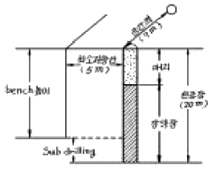
- 77.7kg
- 194.3kg
- 567kg
- 233.3kg
(정답률: 알수없음)
3과목: 암석역학
41. 아래의 그림과 같이 선형탄성 재질의 무한 평판내에 원형의 공동이 Y축 방향으로 10kg/cm2의 응력이 작용하고 있을 때 X축과 공동의 경계 부분(A)에서의 접선 응력의 크기는?
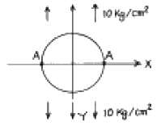
- -10kg/cm2
- 10kg/cm2
- 20kg/cm2
- 30kg/cm2
(정답률: 알수없음)
42. 심부지하에서 단단한 암반내에 굴착된 터널이나 갱도 등의 주변 암반이 급격히 붕괴되어 파괴된 암석 파편이 터널이나 갱내로 돌출해 오는 현상을 무엇이라 하는가?
- bursting
- buckling
- jacking
- hardening
(정답률: 알수없음)
43. 다음 중 소성변형을 가장 잘 나타내는 물체는?
- 물
- 강철
- 화강암
- 점토
(정답률: 28%)
44. 탄성계수가 4×105 kg/cm2인 암석시료가 압축하중을 받는 동안 변형률이 0.0025까지 증가하였다. 단위체적내 축적된 탄성변형률에너지는 얼마인가?
- 1 kg/cm2
- 1.25 kg/cm2
- 1.5 kg/cm2
- 1.75 kg/cm2
(정답률: 알수없음)
45. 내부마찰각이 40° 이고, 한변이 5 cm인 정육면체 암석 블록이 경사면 위에 놓여 있다. 경사면의 각도가 45° 일 때 이 암석 블록의 거동은?
- 전도만 한다.
- 움직이지 않는다.
- 전도하지는 않고 활동한다.
- 전도하면서 활동한다.
(정답률: 20%)
46. 삼축응력상태에 있는 어느 암석의 최대 주응력 σ1, 최소 주응력 σ3, 압축강도 Sc, 인장강도 St 라면 이들 사이에 일정한 관계가 성립한다. 다음 중 맞는 식은 어느 것인가? (단, Coulomb 파괴기준 가정)
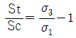
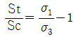
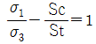
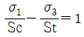
(정답률: 0%)
47. 다음 식은 누구의 이론에서 제시된 것인가? (단, W : 분쇄에 사용되는 실질적인 에너지, ρ : 암석비중, S1 : 파쇄전 표면적, x1 : 파쇄전 입경, S2 : 파쇄후 표면적, x2 : 파쇄후 입경, K : 비례정수)
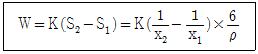
- 그리피스(Griffith) 이론
- 리팅거(Rittinger) 이론
- 킥(Kick) 이론
- 본드(Bond) 이론
(정답률: 알수없음)
48. 암석의 실험실 시험이 아닌 것은?
- 인발시험
- 삼축압축시험
- 직접전단시험
- 비중시험
(정답률: 0%)
49. 직경이 5cm인 암석시편을 종방향으로 15000kg의 인장하중을 주었을 때 횡방향으로 0.0006cm 가늘어 졌다. 이 암석의 Poisson비는 얼마인가? (단, 이 암석의 탄성계수 E = 2.1×106kg/cm2 임)
- 0.26
- 0.29
- 0.33
- 0.36
(정답률: 28%)
50. 암석의 단축압축시험에서 파괴 후 거동을 관찰하기 위한 가장 중요한 조건은?
- 가압속도
- 시료와 하중기 접촉면의 마찰
- 시료 성형의 정밀성
- 하중기의 강성
(정답률: 19%)
51. 미소육면체에 정수압 P가 작용하여 물체가 수축한 경우, 영률(E)과 포아송비(ν)를 이용하여 체적변형률(εvol)을 계산하는 식으로 바른 것은?
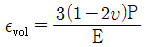
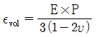
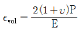
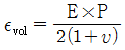
(정답률: 알수없음)
52. 봉압을 증가시키면 나타나는 현상이 아닌 것은?
- 최대 강도가 증가한다.
- 취성거동에서 연성거동으로의 전이가 일어난다.
- 변형률 연화에서 변형률 경화로의 전이가 발생한다.
- 최대 강도 후에 응력의 감소가 점차 커진다.
(정답률: 10%)
53. 밀도가 2.7g/cm3 인 암반의 깊이 800m인 지점에서의 이론상 수직응력은 얼마인가?
- 216kg/cm2
- 246kg/cm2
- 276kg/cm2
- 296kg/cm2
(정답률: 알수없음)
54. 다음 중 암석의 동적성질에 속하는 것은?
- 피로파괴
- 전단파괴
- 영구변형
- 변형연화
(정답률: 알수없음)
55. Barton은 최대전단강도와 수직응력사이의 경험적인 관계식
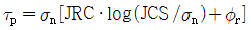
을 제안하였다. 이 식에서 JRC는?- 내부마찰각
- 잔류마찰각
- 절리거칠기계수
- 절리압축강도
(정답률: 0%)
56. 다음 중 암석의 일축압축강도 시험법에 관한 설명으로 틀린 것은?
- 포아송비는 응력과 변형률의 비로서 표시되며 압축시험에서 얻어진 응력-변형률 곡선의 기울기로 나타낸다.
- 시험편의 길이와 지름의 비는 약 2.0정도 되도록 한다.
- 압축강도는 파괴하중을 시험편의 단면적으로 나눈 값이다.
- 암석시험편의 크기가 크면 클수록 일반적으로 압축강도는 작아진다.
(정답률: 알수없음)
57. RQD에 대한 내용 중 잘못 기술된 것은?
- 채취된 암석코아중 길이가 10cm이상인 코아들의 길이의 합을 시추길이로 나눈 것을 백분율(%)로 표시한 값이다.
- RQD 값 산정시 시추구간 길이는 1.5m보다 크지않게 한다. 일본의 경우는 RQD를 시추구간 길이 1m마다 측정 한다.
- RQD는 시추코아의 logging에서 표준요소로 사용되고 있으며, 암반분류 시스템인 RSR(Rock Structure Rating), RMR, Q시스템에서 사용되는 기본 요소이다.
- RQD에 의한 암반분류는 절리의 방향이나 견고성, 충전물질 등을 고려하지 않고 단지 시추공내 절리간격 요소 하나만으로 지보량을 산정하기 때문에 한계가 있다.
(정답률: 0%)
58. 단축압축강도가 150MPa, 단축인장강도가 10MPa인 암석시험편에 대한 전단강도를 Coulomb 파괴이론을 적용하여 구하면 약 얼마인가?
- 19.4MPa
- 21.7MPa
- 38.7MPa
- 45.6MPa
(정답률: 알수없음)
59. 석재의 압축강도시험방법(KS F 2519)에서는 시험편의 형태로 직육면체, 사각기둥형, 원주형을 인정하고 있는데 시험 조건마다 시험편 수는 몇 개 이상이어야 하는가?
- 3개
- 4개
- 5개
- 6개
(정답률: 알수없음)
60. 암석파괴를 설명하는 이론이 아닌 것은?
- Griffith 이론
- Mohr 이론
- Coulomb 이론
- Leeman 이론
(정답률: 0%)
4과목: 화약류 안전관리 관계 법규
61. 다음 중 총포·도검·화약류 등 단속법 시행령 제16조의 규정에 의한 화약류의 취급 방법 중 옳게 기술된 것은?
- 화약·폭약과 화공품은 항상 동일한 용기에 넣어 취급해야 한다.
- 얼어서 굳어진 다이나마이트는 섭씨 60도이하의 온탕을 바깥통으로 사용한 융해기 또는 섭씨 40도이하의 온도를 유지하는 실내에서 누그러뜨린다.
- 전기뇌관에 대하여는 도통시험 또는 저항시험을 하되, 미리 시험전류를 측정하여 0.01암페어를 초과하지 아니하는 것을 사용하는 등 충분한 위해예방조치를 해야한다.
- 굳어진 다이나마이트는 기름에 담근 후 주물러서 부드럽게 한다.
(정답률: 0%)
62. 도폭선을 폐기처리하고자 할 때 가장 올바른 방법은?
- 연소처리 한다.
- 습윤상태로 분해처리 한다.
- 전기뇌관으로 폭발처리 한다.
- 소량씩 땅속에 매몰한다.
(정답률: 0%)
63. 지상 1급 저장소는 흙둑 바깥면으로부터 어느 정도의 공지(빈터)를 두어 화재시에 연소를 방지할 수 있어야 하는가?
- 4m 이상
- 3m 이상
- 2m 이상
- 1m 이상
(정답률: 알수없음)
64. 수중저장소에 화약류를 저장하는 경우 저장방법 및 취급방법으로 가장 거리가 먼 것은?
- 가루로 된 화약류는 15퍼센트 정도의 물기를 머금게 한 후 물이 스며들 수 없게 포장을 하여 나무상자에 넣을 것
- 덩어리화약류는 물에 항상 잠긴 상태로 저장할 것
- 화약류는 수면으로부터 수심 50센티미터 이상의 물속에 저장할 것
- 저장소 내부는 환기에 유의하고 무연화약 또는 다이나마이트를 저장하는 경우에는 온도계를 장치할 것
(정답률: 알수없음)
65. 화약류 운반신고와 관련한 설명으로 옳지 않은 것은?
- 화약류운반신고는 특별한 사정이 없는 한 발송지 관할 경찰서장에게 운반개시 6시간 전까지 해야 한다.
- 화약류운반신고필증은 운반기간이 경과한 때에는 지체 없이 발송지 관할경찰서장에게 반납해야 한다.
- 화약류운반신고필증은 운반하지 아니하게 된 때에는 지체 없이 발송지 관할경찰서장에게 반납해야 한다.
- 화약류운반신고필증은 운반을 완료한 때에는 지체 없이 도착지 관할경찰서장에게 반납해야 한다.
(정답률: 알수없음)
66. 화약류(폭약)를 수출 또는 수입하고자 한다. 누구의 허가를 받아야 하는가? (단, 판매업자임)
- 지방경찰청장
- 경찰서장
- 경찰청장
- 행정자치부장관
(정답률: 알수없음)
67. 신호 또는 관상용으로 1일 동일한 장소에서 꽃불류를 사용하고자 할 때, 화약류 사용허가를 받아야 하는 경우는?
- 직경 6㎝미만의 둥근 모양의 쏘아 올리는 꽃불류를 50개 이하로 사용시
- 직경 6㎝이상, 10㎝미만의 둥근 모양의 쏘아올리는 꽃불류를 15개 이하로 사용시
- 폭약(폭발음을 내는 것에 한한다.) 0.1g 이하의 꽃불류(성냥의 측약 또는 두약의 마찰에 의하여 발화되는 것은 제외)를 300개 이하로 사용시
- 200개이하의 염관을 사용한 쏘아 올리는 꽃불류를 5개 이하로 사용시
(정답률: 17%)
68. 꽃불류 저장소에 저장하여서는 아니되는 화약류는?
- 미진동 파쇄기
- 장난감용 꽃불류
- 신호염관
- 전기도화선
(정답률: 10%)
69. 화약류저장소에서의 저장방법 및 취급방법 중 저장중인 다이나마이트에서 니트로글리세린이 스며나와 마루바닥이 오염된 경우의 처리 방법으로 가장 옳은 것은?
- 증류수 150밀리리터에 염화나트륨 100그램을 녹이고, 알콜 1리터를 혼합한 액체로 니트로글리세린을 분해시키고, 젖은 걸레로 닦아낸다.
- 증류수 150밀리리터에 가성소다 100그램을 녹이고, 글리세린 1리터를 혼합한 액체로 니트로글리세린을 분해시키고, 마른걸레로 닦아낸다.
- 물 150밀리리터에 염화나트륨 100그램을 녹이고, 알콜 1리터를 혼합한 액체로 니트로글리세린을 분해시키고, 마른걸레로 닦아낸다.
- 물 150밀리리터에 가성소다 100그램을 녹이고, 알콜 1리터를 혼합한 액체로 니트로글리세린을 분해시키고, 마른걸레로 닦아낸다.
(정답률: 알수없음)
70. 다음 중 화약류의 안정도 시험 방법이 아닌 것은?
- 내열시험
- 유리산시험
- 가열시험
- 전기분해시험
(정답률: 알수없음)
71. 허가 또는 면허를 받은 사람이 변경사유가 발생하여 기재 사항변경을 신청하려 할 때 몇 일 이내에 허가관청 또는 면허관청에 신고하여야 하는가?
- 10일
- 20일
- 30일
- 40일
(정답률: 알수없음)
72. 초유폭약에 의한 발파의 기술상의 기준에 대한 설명으로 틀린 것은?
- 장전작업중에 습기가 차거나 불순물이 섞이지 않도록 한다.
- 기폭량에 적합한 전폭약을 같이 사용한다.
- 철관류·궤도가 있을 경우 접지용으로 사용하도록 한다.
- 가연성 가스가 0.5%이상이 되는 장소에서는 발파하지 않는다.
(정답률: 10%)
73. 화약류관리보안책임자가 화약류취급 전반에 관한 사항을 주관하면서 대통령령이 정하는 안전상의 감독업무를 게을리 하였다면 어떤 처벌을 받아야 하는가?
- 3년 이하의 징역
- 5년 이하의 징역
- 500만원 이하의 벌금형
- 700만원 이하의 벌금형
(정답률: 알수없음)
74. 다음 중 화약류 제조업 허가를 받을 수 있는 사람은?
- 금고이상 형의 선고를 받고 그 집행이 끝나거나 집행을 받지않기로 확정된 후 3년이 지나지 아니한 사람
- 금고이상 형의 집행유예선고를 받고 그 집행유예의 기간이 끝난 날로부터 1년이 지난 사람
- 20세 미만인 사람 또는 한정치산자
- 파산자로서 복권되지 아니한 사람
(정답률: 알수없음)
75. 운반신고를 하지 아니하고 운반할 수 있는 화약류 수량 중 맞는 것은?
- 화약 50kg
- 공업뇌관 1000개
- 도폭선 2500m
- 총용뇌관 10만개
(정답률: 알수없음)
76. 화약류와 관련한 장부의 비치와 기장에 대한 설명으로 옳지 않은 것은?
- 화약류판매업자는 양도·양수명세부를 비치·기장(記帳)해야 한다.
- 화약류제조업자는 화약류제조명세부와 원료화약류수지명세부를 비치·기장(記帳)해야 한다.
- 장부는 기입을 완료한 날로부터 3년간 각각 보존해야 한다.
- 화약류사용자는 화약류출납부를 비치·기장(記帳)해야 한다.
(정답률: 알수없음)
77. 피보호건물로부터 독립하여 피뢰침과 가공지선을 설치할 경우, 피뢰침과 가공지선의 각 부분이 피보호건물과 최소 필요한 이격거리는?
- 3m 이상
- 2.5m 이상
- 2m 이상
- 1.5m 이상
(정답률: 알수없음)
78. 화약류관리보안책임자의 선임기준으로 옳지 않은 것은?
- 폭약을 1개월에 30kg씩 4개월에 걸쳐서 사용할 사람은 화약류관리보안책임자를 선임할 필요가 없다.
- 화약류관리보안책임자 선임은 화약류저장소 4동까지 1인이 하되, 4동을 초과하는 경우는 초과하는 1동마다 1인을 추가 선임해야 한다.
- 꽃불류 및 장난감용꽃불류저장소는 2급 화약류관리보안 책임자를 선임해도 된다.
- 연중 40톤 이상의 폭약을 저장하는 화약류저장소에는 1급 화약류관리보안책임자를 선임해야 한다.
(정답률: 30%)
79. 화약류 저장소의 저장방법이나 저장량을 위반한 때의 벌칙은?
- 10년이하의 징역 또는 2천만원이하 벌금
- 5년이하의 징역 또는 1천만원이하 벌금
- 3년이하의 징역 또는 700만원이하 벌금
- 2년이하의 징역 또는 500만원이하 벌금
(정답률: 알수없음)
80. 안정도시험에 사용하는것 중 행정자치부령이 정하는 것에 속하지 않는 것은?
- 정제활석분
- 표준색지
- 옥도가리전분지
- 적색리트머스시험지
(정답률: 알수없음)
5과목: 굴착공학
81. 다음은 유효응력을 설명한 것이다. 틀린 것은?
- 전응력보다 큰 값을 갖는다.
- 토립자에 의해 전달되는 단위면적당의 힘이다.
- 흙의 체적변화와 강도를 제어한다.
- 유효응력이 클수록 흙은 촘촘해진다.
(정답률: 알수없음)
82. 사면의 안정을 유지하는 한계고를 구하는 식은? (단, Ns : 안정계수, C : 흙의 점착력, γt : 흙의 단위 체적중량)
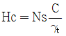
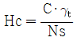
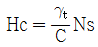
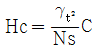
(정답률: 알수없음)
83. 붕괴성이나 팽창성 암반에서 밀려나오는 터널 막장면의 안정을 도모하기 위한 보조공법은?
- fore poling
- mini pipe roof
- face rock bolt
- sheet pile
(정답률: 알수없음)
84. 강아치 지보공에 대한 설명으로서 잘못된 것은?
- 큰 토압이 작용하는 경우 유리함
- 다량의 용수가 있을 경우 유리함
- 팽창성 암반에 유리함
- 굴착직후의 막장 자립성이 문제가 되는 경우 유리함
(정답률: 알수없음)
85. 다음 암반 평가항목 중 암반분류법 Q-시스템과 RMR 시스템에서 공통으로 반영되지 않는 항목은?
- 절리면의 간격(joint spacing)
- 절리면의 거칠음(joint roughness) 상태
- 지하수 유입상태
- RQD(Rock Quality designation)
(정답률: 알수없음)
86. 터널에서 내공변위를 계측함으로써 알 수 있는 사항이 아닌 것은?
- 지보 부재 효과
- 복공 콘크리트 타설시기의 판정
- Rock Bolt 길이 타당성
- 주변 암반의 안정
(정답률: 알수없음)
87. 비중이 2.6, 공극율이 60%인 모래 지반이 있다. 현재의 동수구배가 0.5이면 분사현상에 대한 안전율은 얼마인가?
- 1
- 1.28
- 2
- 2.5
(정답률: 알수없음)
88. 지하 공동에 저장된 원유로부터 증발된 휘발성 기체의 유출을 막기 위한 조치로 적절하지 않은 것은?
- 저장공동 주위의 압력을 인위적으로 증가시킨다.
- 다단면 분할 굴착공법을 적용한다.
- 수봉 시설을 설치한다.
- 저장공동 주위에 소단면 수압터널을 여러 개 굴착한다.
(정답률: 0%)
89. 다음 그림에 주어진 사면의 평면파괴(plane failure) 가능성을 평가하고자 한다. 예상 파괴면의 경사각은 50˚, 점착력 0.1 MPa, 마찰각 30˚, 파괴면 면적 10m2 이고, 예상 파괴면 상부 암괴의 체적은 20m3, 암석의 단위중량은 0.027MN/m3 라면 이 사면의 안전율은? (단, 선형 Mohr-Coulomb 파괴기준 적용)
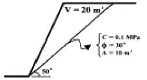
- 0.73
- 3.17
- 0.54
- 2.90
(정답률: 알수없음)
90. 해석 모델의 경계에 해당하는 부분만 이산화하여 수치연산을 행하는 수치해석법은?
- 유한요소법
- 유한차분법
- 경계요소법
- 개별요소법
(정답률: 알수없음)
91. 록 볼트와 숏크리트를 주요 지보재로 하고, 암반의 지지력을 적극적으로 활용하면서 현장계측을 바탕으로 터널을 굴진하는 공법은?
- TBM공법
- 실드공법
- NATM공법
- 개착공법
(정답률: 20%)
92. 다음 터널굴착 조사 중 시공 단계에서의 조사 항목이 아닌 것은?
- 실시설계 검토
- 설계방법 검토
- 시공방법 검토
- 시공관리 검토
(정답률: 20%)
93. TBM 공법에 비하여 NATM 공법이 유리한 점은?
- 모암에 균열 발생이 적음
- 작업환경이 양호
- 초기 굴착 단면이 양호
- 불량암질에 대한 굴착공법 변경 용이
(정답률: 20%)
94. 지하굴착시 기설구조물 바로 아래 또는 부근을 굴착하는 경우 구조물 기초의 지지력이 저하되어 안정이 손상될 우려가 있기 때문에 지반의 개량, 기초보강, 개조 등을 실시하게 되는데 이와같은 공법을 무엇이라고 하는가?
- 언더피닝(underpinning)공법
- 파이프루프(pipe roof)공법
- 메세르(messer)공법
- 역권공법
(정답률: 16%)
95. 다음 중에서 터널굴착에 있어서 가장 부적절한 지질은 어느 것인가?
- 지열, 가스분출이 없는 화성암
- 변질 사문암 또는 안산암
- 지하수나 용수가 없는 석회암
- 지반이동의 우려가 없는 퇴적암
(정답률: 알수없음)
96. 지하 유류비축 시설 설계시 비교적 휘발성이 적은 유류를 저장하는 방식은?
- 건상식
- 변동수상식
- 고정수상식
- 상압동결저장식
(정답률: 0%)
97. 다음 중 액상화(liquefaction) 현상이 발생하기 위한 일반적인 조건이 아닌 것은?
- 완전 포화
- 순간 하중
- 점토질 흙
- 다져지지 않은 사질토
(정답률: 알수없음)
98. 연직방향으로 토압 σV 가 작용하는 지반에서 주동토압(active earth pressure)에 의한 파괴상태를 나타내는 Mohr원은 다음 그림에서 어느 것인가?
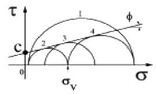
- ①
- ②
- ③
- ④
(정답률: 알수없음)
99. Barton의 전단강도를 계산하기 위하여 필요한 자료가 아닌 것은?
- 전단면에 작용하는 전단응력
- 전단면의 거칠기 계수(JRC)
- 전단면의 압축강도(JCS)
- 전단면의 기본 마찰각(øb)
(정답률: 17%)
100. 지하공동의 유지를 위한 지보의 목적에 대한 설명으로 잘못된 것은?
- 공동주벽이 붕괴하였을 때 암석파편이 공동내로 침입하는 것을 방지한다.
- 공동주벽에 작용하는 응력을 주벽대신 받는다.
- 공동 단면적이 감소하는 것을 방지한다.
- 공동주벽면에 인장응력을 발생시켜 주벽이 파괴되지 않게 한다.
(정답률: 알수없음)